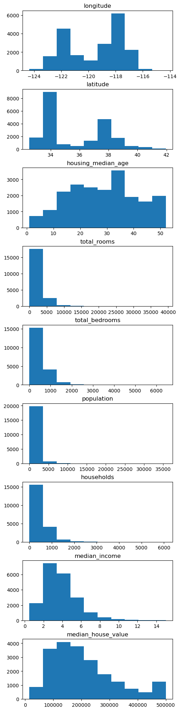

import numpy as npimport matplotlib.pyplot as pltfrom scipy.stats import linregress# rho only measures linear dependence, not dependence in generaldef fun_quadratic(x): xmax = np.max(x)return x * (xmax - x) + np.random.normal(0, 0.1* xmax, len(x))np.random.seed(456)x = np.arange(0, 10, 0.1)y = fun_quadratic(x)# Plottingplt.scatter(x, y, color='blue', s=5)slope, intercept, _, _, _ = linregress(x, y)plt.plot(x, intercept + slope * x, color='red') # linear regression lineplt.show()# Print correlationprint(f"La correlación es de {np.corrcoef(x, y)[0, 1]:.3f}")
La correlación es de 0.011
import pandas as pdimport matplotlib.pyplot as plt# Read the data from the URL, the California housing dataset# 1. longitude: A measure of how far west a house is; a higher value is farther west# 2. latitude: A measure of how far north a house is; a higher value is farther north# 3. housingMedianAge: Median age of a house within a block; a lower number is a newer building# 4. totalRooms: Total number of rooms within a block# 5. totalBedrooms: Total number of bedrooms within a block# 6. population: Total number of people residing within a block# 7. households: Total number of households, a group of people residing within a home unit, for a block# 8. medianIncome: Median income for households within a block of houses (measured in tens of thousands of US Dollars)# 9. medianHouseValue: Median house value for households within a block (measured in US Dollars)# 10. oceanProximity: Location of the house w.r.t ocean/seahousing = pd.read_csv('https://raw.githubusercontent.com/ageron/handson-ml/master/datasets/housing/housing.csv')# See the structure of the dataprint(housing.head())
longitude latitude housing_median_age total_rooms total_bedrooms \
0 -122.23 37.88 41.0 880.0 129.0
1 -122.22 37.86 21.0 7099.0 1106.0
2 -122.24 37.85 52.0 1467.0 190.0
3 -122.25 37.85 52.0 1274.0 235.0
4 -122.25 37.85 52.0 1627.0 280.0
population households median_income median_house_value ocean_proximity
0 322.0 126.0 8.3252 452600.0 NEAR BAY
1 2401.0 1138.0 8.3014 358500.0 NEAR BAY
2 496.0 177.0 7.2574 352100.0 NEAR BAY
3 558.0 219.0 5.6431 341300.0 NEAR BAY
4 565.0 259.0 3.8462 342200.0 NEAR BAY
housing.describe()
longitude
latitude
housing_median_age
total_rooms
total_bedrooms
population
households
median_income
median_house_value
count
20640.000000
20640.000000
20640.000000
20640.000000
20433.000000
20640.000000
20640.000000
20640.000000
20640.000000
mean
-119.569704
35.631861
28.639486
2635.763081
537.870553
1425.476744
499.539680
3.870671
206855.816909
std
2.003532
2.135952
12.585558
2181.615252
421.385070
1132.462122
382.329753
1.899822
115395.615874
min
-124.350000
32.540000
1.000000
2.000000
1.000000
3.000000
1.000000
0.499900
14999.000000
25%
-121.800000
33.930000
18.000000
1447.750000
296.000000
787.000000
280.000000
2.563400
119600.000000
50%
-118.490000
34.260000
29.000000
2127.000000
435.000000
1166.000000
409.000000
3.534800
179700.000000
75%
-118.010000
37.710000
37.000000
3148.000000
647.000000
1725.000000
605.000000
4.743250
264725.000000
max
-114.310000
41.950000
52.000000
39320.000000
6445.000000
35682.000000
6082.000000
15.000100
500001.000000
# Create a list of all variables except ocean proximityvars_to_plot = [var for var in housing.columns if var !='ocean_proximity']# Create a figure and a subplot for each variablefig, axes = plt.subplots(nrows=len(vars_to_plot), ncols=1, figsize=(5, 20),constrained_layout=True)# Plot a histogram for each variablefor i, var inenumerate(vars_to_plot): axes[i].hist(housing[var]) axes[i].set_title(var)# Show the plotplt.show()

Variables del data set housing
households: número de hogares en el bloque censal
import seaborn as sns# Compute the correlation matrix excluding 'ocean_proximity'corr_matrix = housing.drop('ocean_proximity', axis=1).corr()# Create a heatmap of the correlation matrixplt.figure(figsize=(10, 8))sns.heatmap(corr_matrix, annot=True, cmap='coolwarm', vmin=-1, vmax=1)plt.title('Correlation Matrix (Correlogram) of Housing Variables')plt.show()
corr_matrix
longitude
latitude
housing_median_age
total_rooms
total_bedrooms
population
households
median_income
median_house_value
longitude
1.000000
-0.924664
-0.108197
0.044568
0.069608
0.099773
0.055310
-0.015176
-0.045967
latitude
-0.924664
1.000000
0.011173
-0.036100
-0.066983
-0.108785
-0.071035
-0.079809
-0.144160
housing_median_age
-0.108197
0.011173
1.000000
-0.361262
-0.320451
-0.296244
-0.302916
-0.119034
0.105623
total_rooms
0.044568
-0.036100
-0.361262
1.000000
0.930380
0.857126
0.918484
0.198050
0.134153
total_bedrooms
0.069608
-0.066983
-0.320451
0.930380
1.000000
0.877747
0.979728
-0.007723
0.049686
population
0.099773
-0.108785
-0.296244
0.857126
0.877747
1.000000
0.907222
0.004834
-0.024650
households
0.055310
-0.071035
-0.302916
0.918484
0.979728
0.907222
1.000000
0.013033
0.065843
median_income
-0.015176
-0.079809
-0.119034
0.198050
-0.007723
0.004834
0.013033
1.000000
0.688075
median_house_value
-0.045967
-0.144160
0.105623
0.134153
0.049686
-0.024650
0.065843
0.688075
1.000000
# sort the correlation matrix by the correlation with median_house_valuecorr_matrix['median_house_value'].sort_values(ascending=False)